Are sites on Station Road, Claverdon, sustainable?
Policy TR3 asks whether a location offers residents "a genuine choice of transport modes". Claverdon has one bus out on a Monday and one return on a Wednesday, and a roughly two-hourly train with none on Sundays. The journey to the station, and to every service in the village, is along a road with a single footway on the far side, unlit, no wider than a metre anywhere and 55 to 70 centimetres for half of the 1.4 km to the station, beside 40 mph traffic, ending at a full-height kerb about 20 metres short of the station ramp. For a wheelchair, a mobility scooter or a pushchair it is not a route at all. This page sets out what was measured, and how inspectors have decided the same question since the Framework changed on 17 August.
How the widths were measured. The rule in every photograph and clip is 1 metre. Widths are measured from the back of the footway to the edge of the highway.
Six clips, in route order, site to station
Filmed on the walking route on 22 September 2026, daylight, dry. Sound off. Each clip is 5 to 12 seconds.
Lorry passing the footway where the 30 mph limit ends. 1 m here, before a long section of 0.55 to 0.70 m.
Three vehicles pass in nine seconds. Footway 55 to 70 cm, hedge on one side, carriageway on the other.
No kerb separation. The footway narrows as the verge widens. 0.6 m on average through the narrow section.
Footway against a fence, tape laid across. 0.8 m usable, or 1 m only by putting one wheel in the drainage channel. The kerb here is full height, 125 mm, not a dropped kerb: the commentary on the clip misspeaks.
Oncoming traffic at the point the footway stops, 20 m short of the station, at a full-height 125 mm kerb with no dropped kerb. Vehicles coming this way have left the 50 mph limit only a few hundred metres beyond the station.
Night clip: 10 seconds at the proposed crossing point and 10 seconds on the 40 mph section after dark. Nothing else on this page will do as much work.
There is no street lighting on any part of the A4189 through Claverdon.
What one metre looks like on this footway
Clear width was measured with a tape and a straight edge at each change of section, from the proposed crossing point to the station. The footway is no wider than about 1 metre anywhere. For around half the route, including beside 40 mph traffic, it is 0.55 to 0.70 metres. For 60 metres past the village hall, shop and surgery there is no footway at all.
The wheelchair is drawn to the same scale as the bar. Its wheels span 0.7 m; the user's elbows more. On the narrowest half of this route the footway is narrower than the chair.
Benchmarks: DfT Inclusive Mobility (2021); Warwickshire County Council Design Guide Part 2 (2.0 m minimum, 1.5 m where constrained, 1.0 m absolute minimum over no more than 6 m). They are standards for new footways; here they describe the route the applicant relies on.
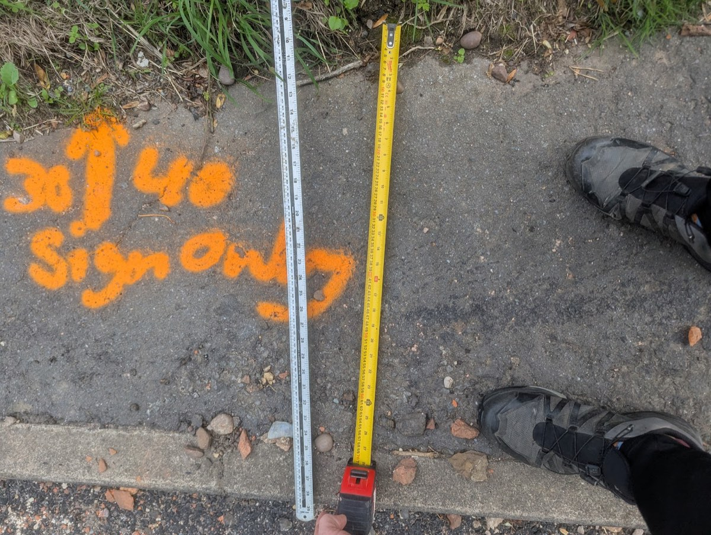
Clear width 0.55 to 0.70 m.
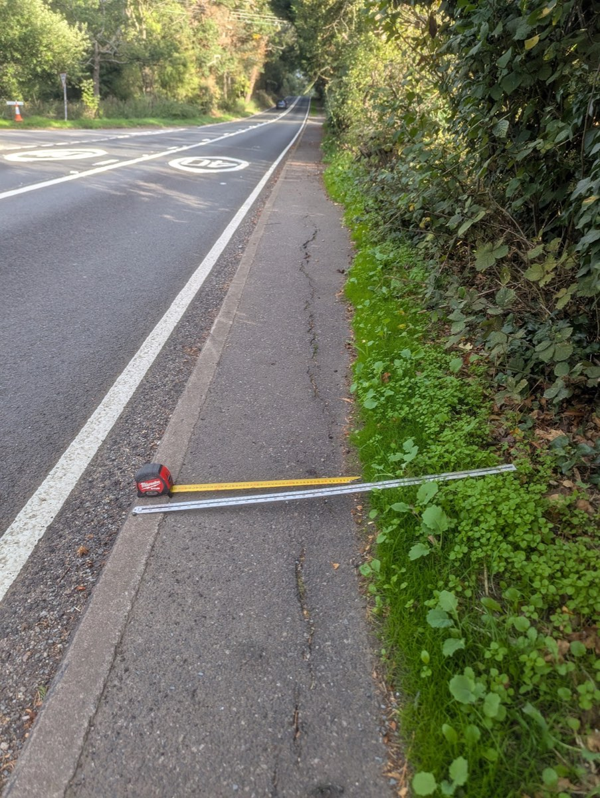
Clear width 0.60 m. 40 mph section.
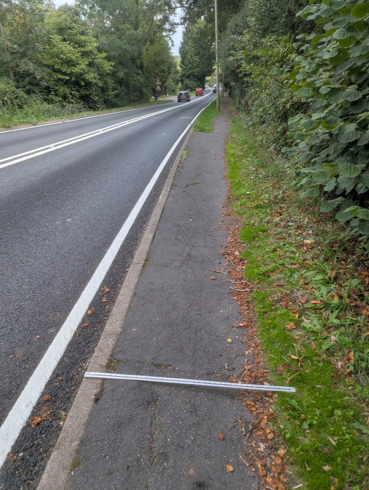
Clear width 0.9 m. No kerb, no verge between footway and carriageway.
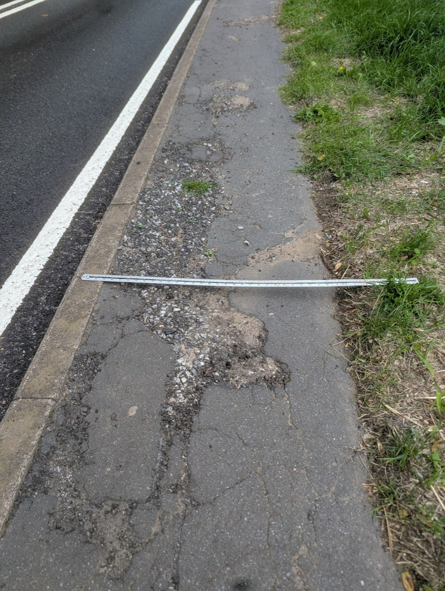
Surface broken at the carriageway edge. 0.75 m
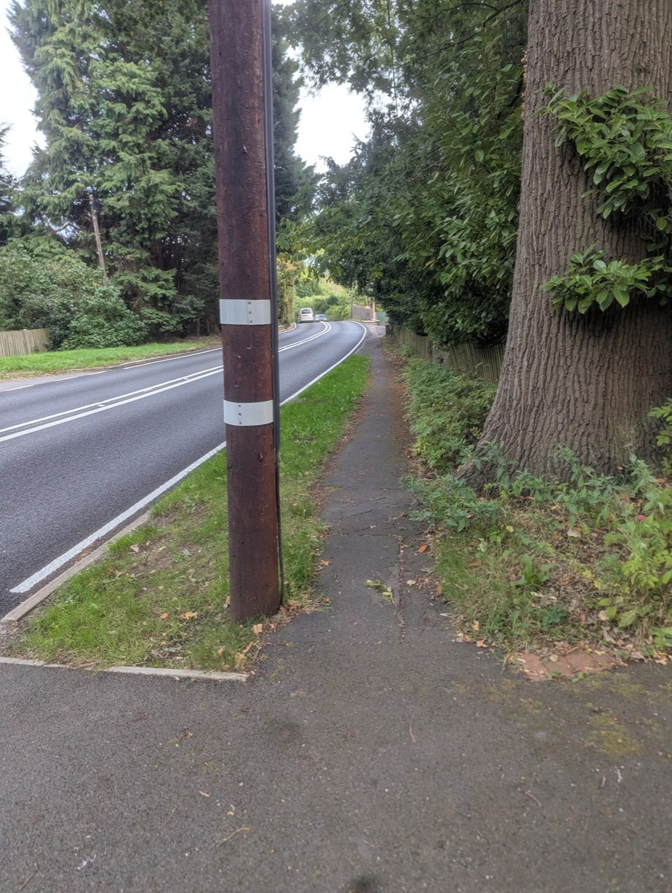
Poles, trees and boundaries sit on the footway edge. This footway cannot be widened without moving them.
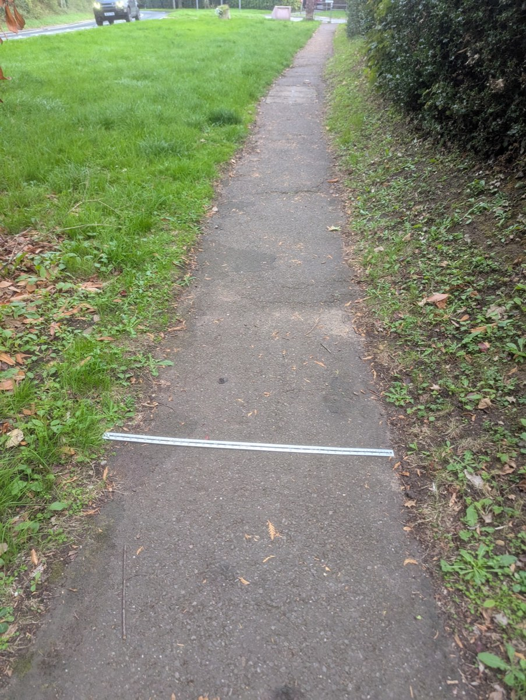
The widest section, 0.9 to 1 m. No tactile paving at the Park Drive and Langley Road junctions.
Past the hall, shop and surgery: no footway at all
For 60 metres in the middle of the village, beside the facilities the applicant lists, there is no footway. Pedestrians walk in the carriageway or on the verge.
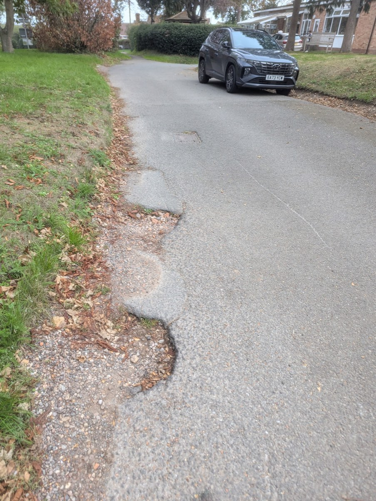
Past the hall, shop and surgery. The route the applicant's residents would take to every village facility.
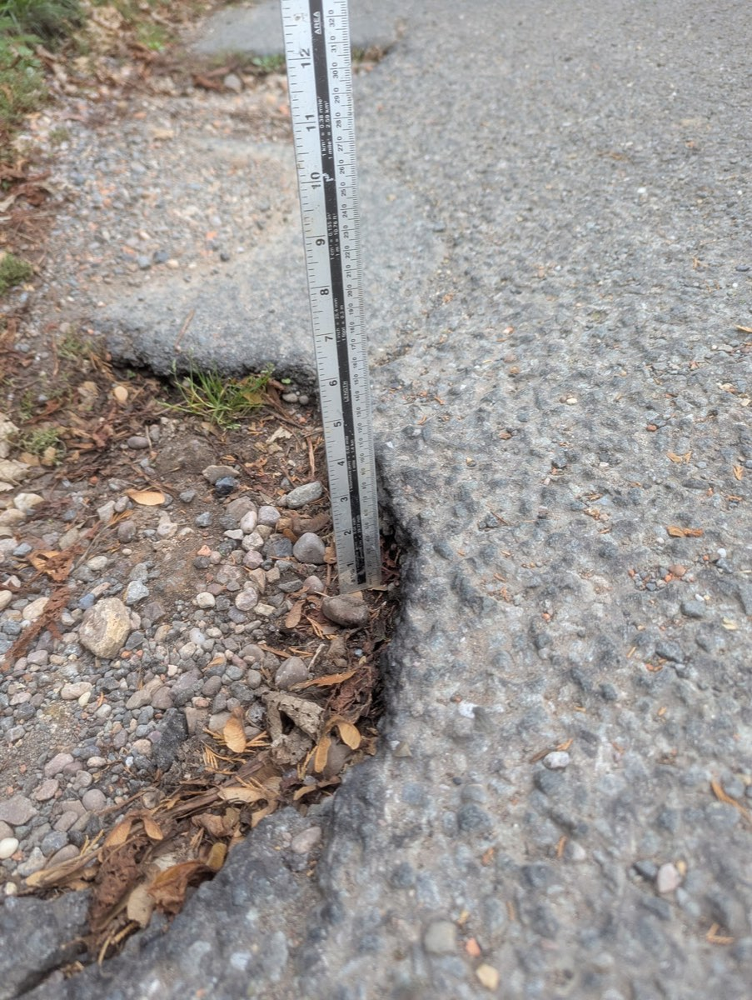
A 60 mm deep pothole on the carriageway edge in the section with no footway, where a pedestrian, a wheelchair or a pushchair has to travel in the road.
The footway stops before the station does
The south-side footway ends against a building corner at a lay-by, about 20 metres short of the station ramp, with a full-height 125 mm kerb and no dropped kerb. A wheelchair or pushchair cannot leave the footway at that point.
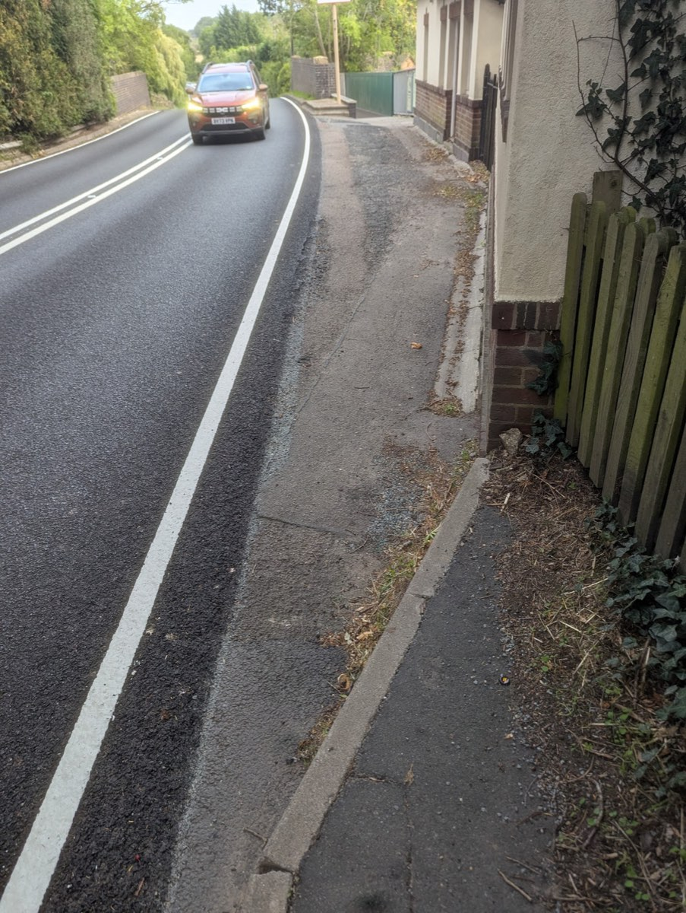
The footway runs out against the boundary. Full-height 125 mm kerb, no dropped kerb, lay-by beyond.
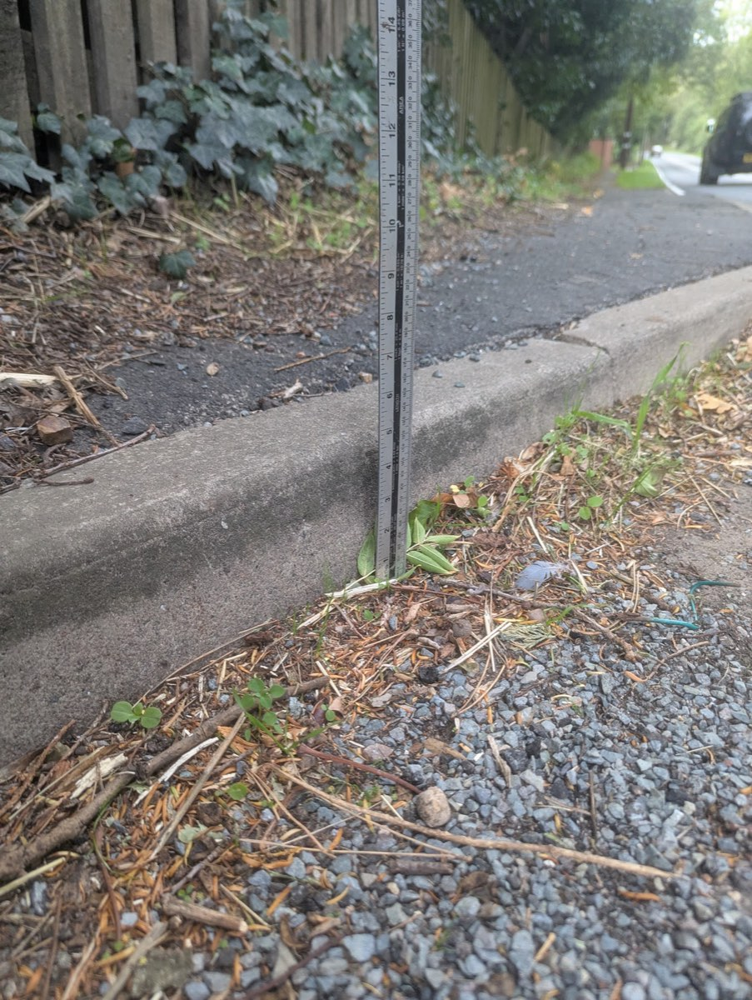
Clear width [__ m] at the last section before the kerb.
One metre from the station wall to the edge of the highway. A wheelchair is about 0.7 m wide and needs 0.9 m clear to pass an obstacle; Inclusive Mobility asks for 1.5 m for a wheelchair and a pedestrian to pass each other. A goods vehicle body is 2.55 m wide, the UK legal maximum.
The station itself is an unstaffed request stop with no car park. Its own notice board tells passengers there are no regular bus services and that the village is a 20 to 25 minute walk. The walk back from the station to the site entrance, without stopping, took 19 minutes.
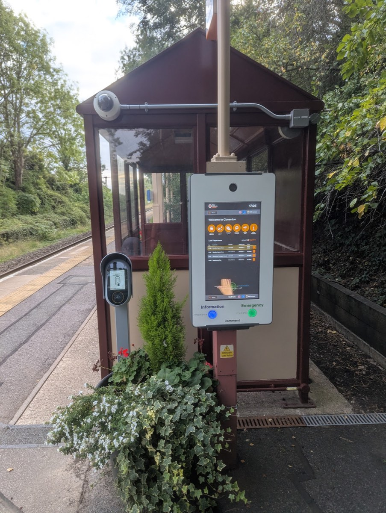
Unstaffed request stop. Trains roughly every two hours on weekdays. None on Sundays.
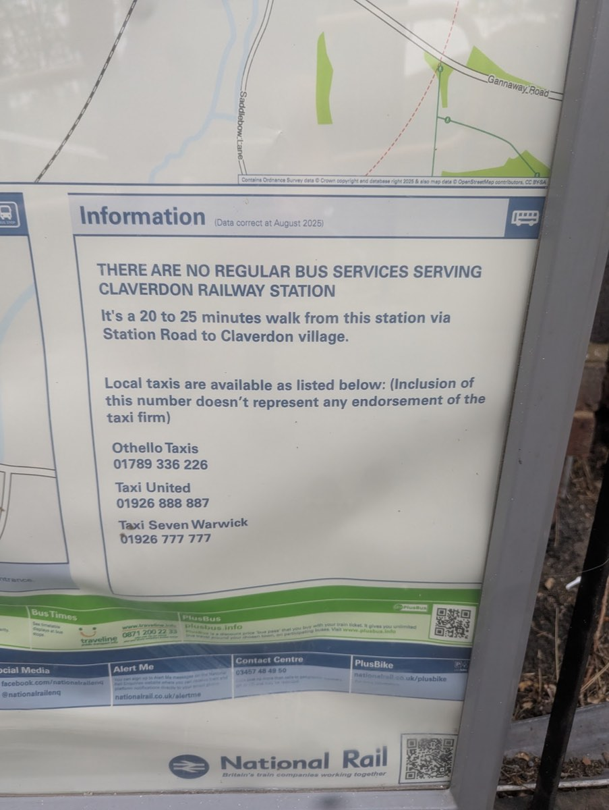
"There are no regular bus services serving Claverdon railway station. It is a 20 to 25 minute walk from this station via Station Road to Claverdon village."
Fast traffic beside a narrow footway, and an unlit crossing to reach it
The only speeds on the file are the applicant's own, from a count in the 30 mph section beside the site: an 85th percentile of 39.9 mph eastbound, with about 83 per cent of drivers over the limit. On the 40 mph section, where the footway is narrowest and drivers approaching from the station have just come down from 50 mph, no speed has been measured by anyone.
The point is not highway safety. It is whether a footway 55 to 70 cm wide, with no verge between it and the carriageway, beside traffic at those speeds, is a route anyone will choose to walk or wheel. Inspectors have treated it that way: at Copthorne a mainly unlit road at 30 to 40 mph meant journeys on foot "would not be attractive to the majority of occupants"; at Wolvey a narrow footway beside a 50 mph road decided the case.
To reach the footway at all, a resident must first cross the road, at the dropped kerb the applicant proposes on the site frontage.
There is no street lighting on any part of the A4189 through Claverdon. WCC Highways records "no existing street lighting within the vicinity of the site". WCC's Road Safety Audit review, item 5.1, recommends "sufficient lighting … to remove the dark spot around the pedestrian crossing point". WCC Ecology's proposed condition requires the boundary hedgerows to be "not illuminated (as far as possible)". The Neighbourhood Plan's streetscape guidelines say "discourage street lighting". No document on the file reconciles the three, and no response to item 5.1 is on the file.
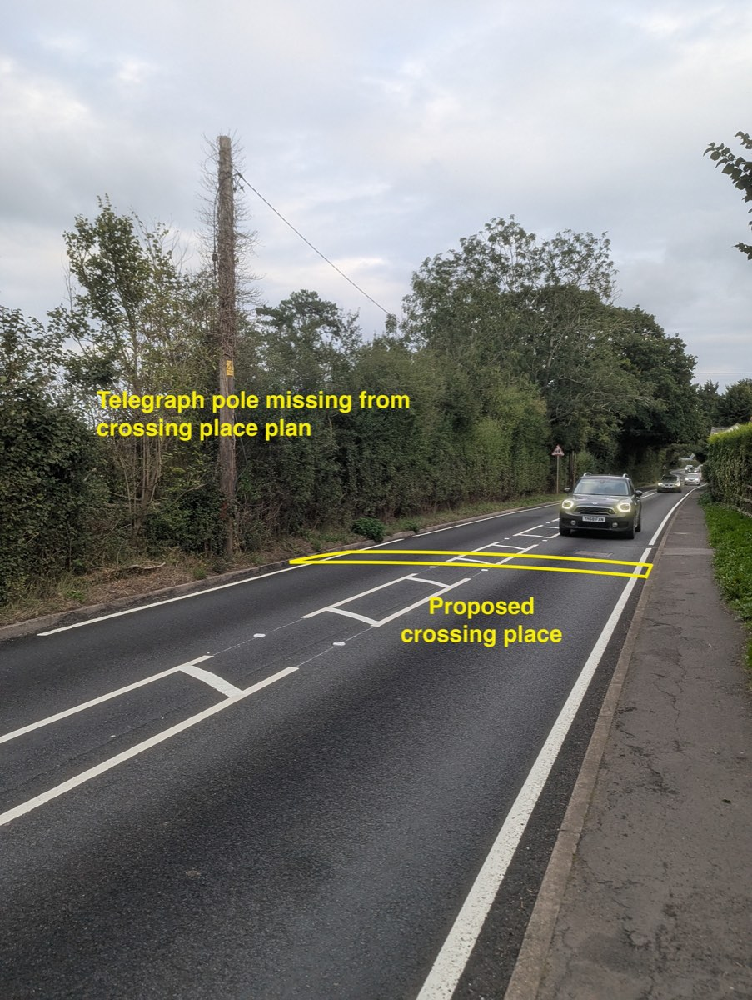
Looking east from the site frontage. The footway is on the far side, beyond the far white line. The pole stands at the edge of the carriageway beside the crossing, and does not appear on the access drawing.
The applicant's two drawings of this frontage do not agree with each other. Both are reproduced below over the same ground and at the same scale: the survey on the left, the access drawing on the right.
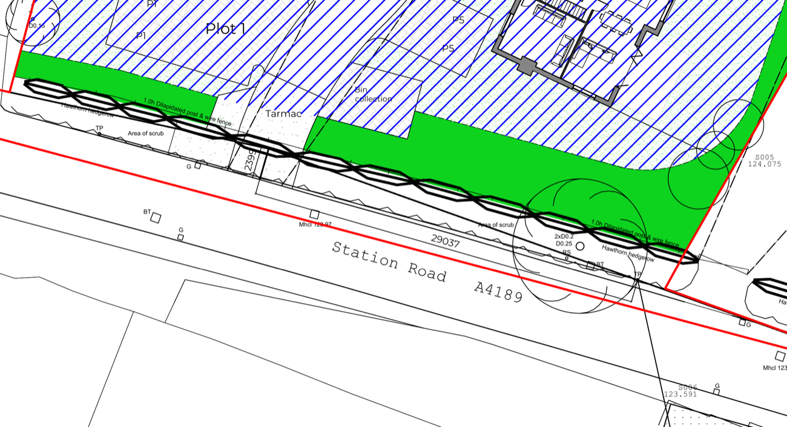
The applicant's own survey marks a telegraph pole, TP, on each side of the access, standing close to the road edge in the hawthorn hedgerow. The eastern one stands with the road sign; the western one sits in the deepest part of the 97 m western splay. Neither appears on the access drawing. Site Plan as Proposed, job 249 no 16, detail. Open the full plan (PDF).
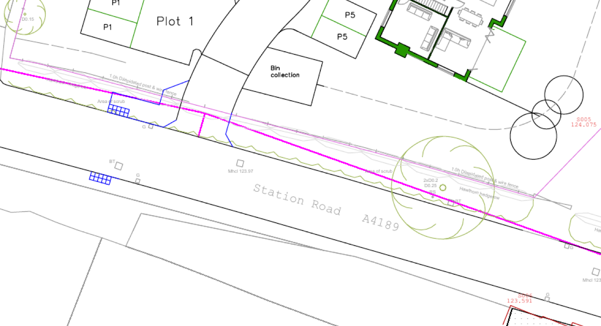
The same stretch of frontage on drawing 27599-01 Rev D (DTA, August 2026). The two blue squares are the proposed dropped kerb and tactile paving, one on each side of Station Road. Drawn here at the same scale and over the same ground as the survey above. The western telegraph pole, which that survey places in the deepest part of the 97 m splay, is not marked. Open the full drawing (PDF).
Bottom ten per cent in England and Wales
The Department for Transport's Connectivity Tool, which the Framework says "should be used" in assessing locations for development (TR3(2)), scores the 100 m square containing the site as follows. Scores are a percentage of the best-connected location in the country.
The tool "does not currently take into account the quality of walking, cycling or public transport routes. This includes aspects such as footway presence, footway width, surface type, and lighting." Scores "should always be contextually appraised using local knowledge / evidence".Department for Transport, Applying Connectivity Tool, section 6
The score assumes the footway is there and usable. Add what the survey measured and the position is worse than 26.
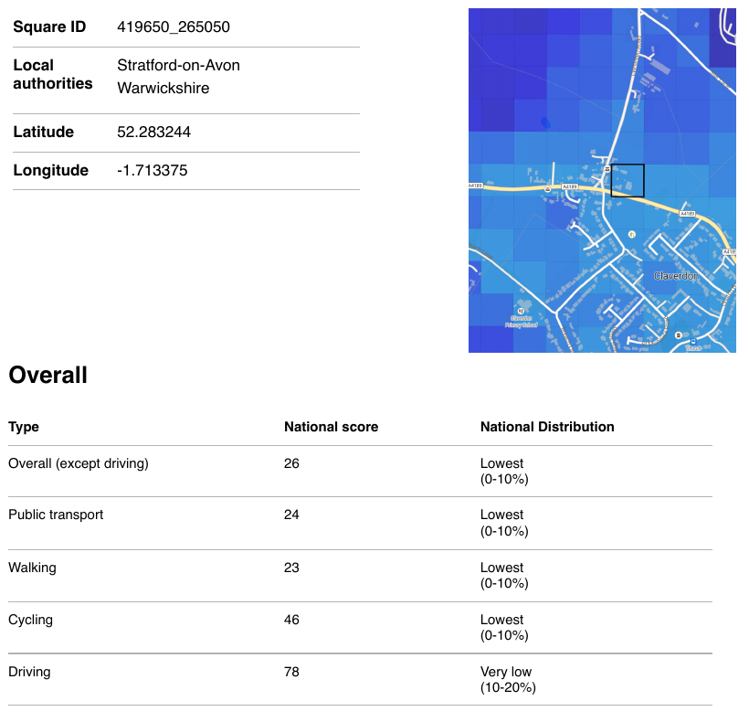
Square 419650_265050, Connectivity Tool Lite, 21 September 2026. The black square on the map is the site. Open the full four-page result (PDF), with the scores for education, health, shopping, workplaces and residential destinations.
Every destination type scores in the bottom ten per cent for walking and for public transport. By car the same square reaches workplaces at an above-average level. That contrast is what TR3(1)(a) describes: a location that does not limit the need to travel by private car.
A neighbouring district has already acted on a score like this. On 18 September 2026 Wychavon refused permission in principle for up to five dwellings at Astwood Bank, citing a Connectivity Tool score of 23, "narrow, mostly unlit pedestrian routes" and a limited bus service, using the tool "alongside other relevant qualitative and quantitative evidence".
Whose judgement this is
For a Green Belt site to escape being inappropriate development under the grey belt route, all four limbs of policy GB7(1)(g) must be met. Limb (iii) requires "a sustainable location, with particular reference to policy TR3". TR3(1)(a) says the location "should limit the need to travel, particularly by private car, and offer a genuine choice of transport modes for residents and users".
That judgement belongs to the Council. Warwickshire County Council Highways assesses safety and capacity, TR3(1)(c), and has said in writing that wider sustainability is outside its remit. A "no objection" from Highways does not answer limb (iii).
TR4(1)(c) requires development to "meet the needs of disabled people, older people and children in relation to all modes of transport". The Council's duty under section 149 of the Equality Act 2010 is to have due regard to those needs. The survey is the evidence that duty applies to.
The bus service is one 510 journey out and back on Wednesdays and one 513 journey out on Mondays. The 511 does not serve Claverdon. The train is roughly two-hourly on weekdays, with no Sunday service. Every other journey from five detached houses here, to work, to a supermarket, to most healthcare, to secondary school, is by car.
What the same facts have meant elsewhere
The Framework changed on 17 August 2026. All five appeals in the table below were decided under the new Framework, on policies GB7(1)(g)(iii) and TR3, and each inspector says so in the decision letter. Three of the five expressly gave the parties the chance to comment on the new wording first. These are not decisions under the old rules being read across.
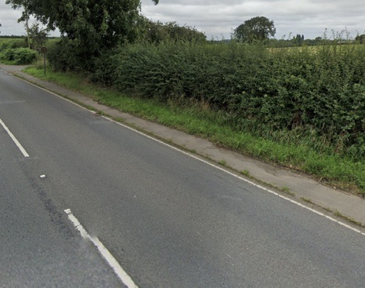
Hinckley Road, Wolvey, Rugby, appeal APP/E3715/W/25/3368832, dismissed 2 December 2025, under the previous Framework. Two dwellings, grey belt agreed. The inspector: the footway "is narrow and would not safely accommodate larger pushchairs or wheelchairs", unlit, beside a 50 mph road; "not in a sustainable location, largely because of the walking route". Image © Google, Street View, August 2023.
Five appeals under the August 2026 Framework
Click any appeal below to open a summary of that inspector's findings: the footway and the walking route quoted in full with paragraph numbers, the other factors that were weighed, what decided the case, and a link to the decision letter itself.
| Appeal | Route | Homes · supply | Framework | Outcome |
|---|---|---|---|---|
| Hatton Station, Warwick · 6006637 · 23 Sep | 350 m from the station on an unlit road with no continuous footway | 28 affordable · 1.96 yrs | Aug 2026 ¶2 | Dismissed. The route "cannot reasonably be regarded as providing a safe route for all users" (¶24) |
| Branford Wells, Newchapel · 6010313 · 4 Sep | 40 mph lane, no footway, no lighting | 5 · 1.97 yrs | Aug 2026 ¶5 | Dismissed. Occupiers "heavily reliant on private vehicles" |
| Copthorne · 6011736 · 22 Sep | 1 km walk, mainly unlit, a stretch in the carriageway; hourly bus; tool score 52 | 7 · 2.17 yrs | Aug 2026 | Dismissed. Walking not "attractive to the majority of occupants" |
| Frith Manor, East Grinstead · 6008688 · 23 Sep | Lit, continuous, but narrow footway beside a busy road | 1 · 1.92 yrs | Aug 2026 ¶3 | Dismissed. No "genuinely attractive choice of transport modes" (¶17) |
| Higher Poynton · 6010471 · 21 Sep | Continuous lit footway at 30 mph; regular buses; tool score 52 | 7 | Aug 2026 ¶5 | Allowed. Sustainable location met; route quality decided it. |
Same score, opposite result at Copthorne and Higher Poynton. The Connectivity Tool corroborates; the footway decides.
Survey, photographs and video: Dan Mullineux, resident of Claverdon, 22 September 2026. Lodged on the planning file for 26/01470/FUL on 23 September 2026 with the measurements above. Everything on this page is on the file.
Documents on the file referred to:
- Footway survey, 22 September 2026 (with measurements, photographs and this video)
- Representation on the revised Framework, 20 September 2026 (Connectivity Tool result, bus and rail timetables)
- Representation on the Transport Appraisal, 23 September 2026 (lighting, bus services, copied pedestrian text)
- WCC Highways responses of 17 July, 12 August, 7 and 8 September 2026; Road Safety Audit review, item 5.1
National Planning Policy Framework, 17 August 2026: policies GB6, GB7(1)(g), TR3, TR4; Annex B. Appeal decisions cited by PINS reference number. DfT Connectivity Tool Lite, square 419650_265050.
Accessibility. This page is built to meet WCAG 2.1 AA: information is conveyed with text and symbols as well as colour, links and controls are keyboard-navigable with a visible focus, there is a skip link, text resizes and the layout is single-column on small screens, videos are muted with captions, and the page respects your system’s reduced-motion and light or dark settings. If any part is difficult to access or you would like it in another format, please contact the author.